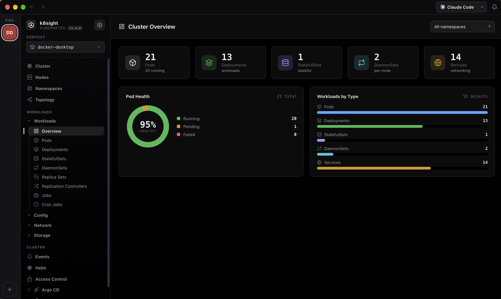
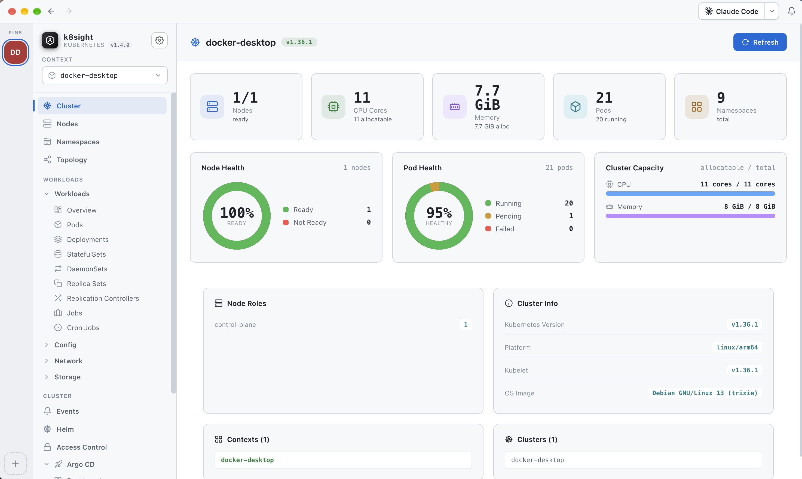
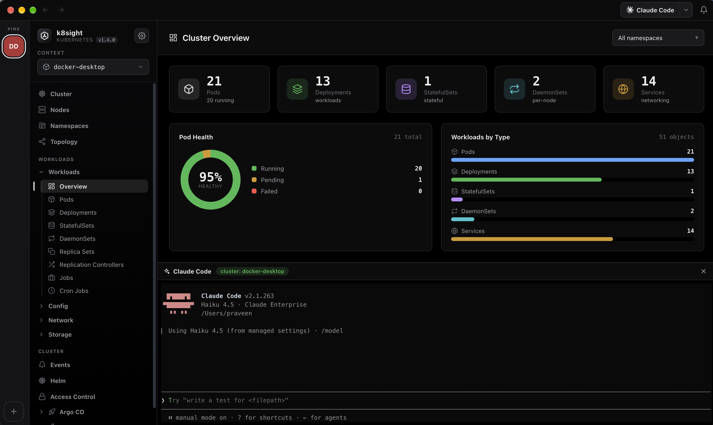
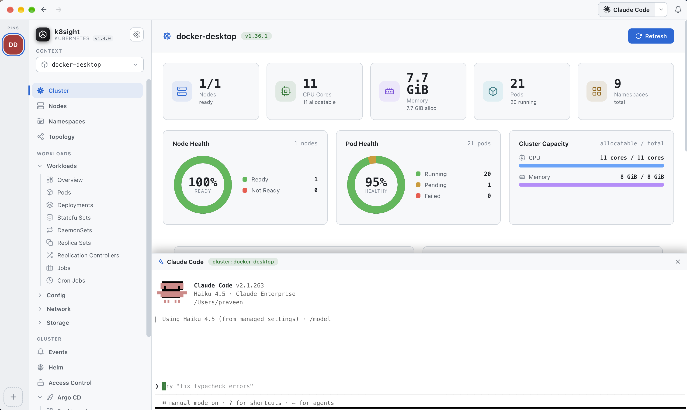
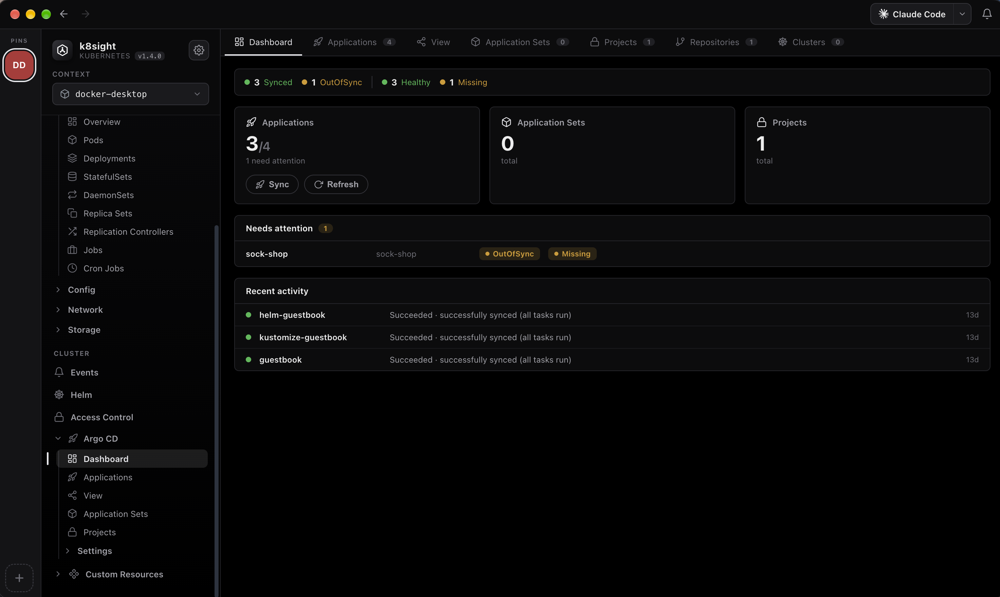
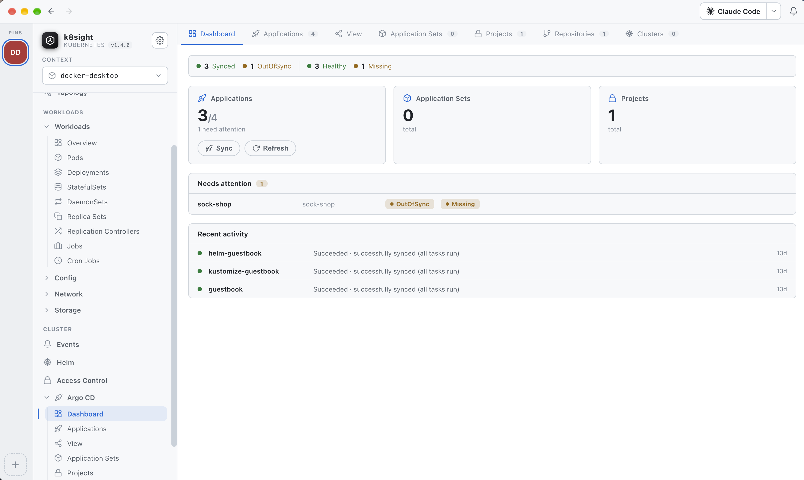

Thanks for trying k8sight!
It’s free and open-source. If it saves you time, a coffee helps keep it going — no pressure, your download is on its way.

Starting your download in 10s…
Download now
k8sight is a native desktop app for browsing and operating any Kubernetes cluster from your local kubeconfig — live metrics, pod logs, interactive shells, topology, Helm, Argo CD, one-click EKS & AKS clusters, a built-in AI assistant and docked coding agents.
Free & open-source · macOS .dmg · Windows .exe · Linux .AppImage / .deb


Browse workloads, watch live metrics, stream logs, open a shell, forward ports and inspect topology — with a native title bar, a command palette and Apple-smooth motion throughout.
Node and pod health donuts, workload charts and real capacity — an at-a-glance overview the moment you connect.
Pods, Deployments, StatefulSets, DaemonSets, Services and more — with live CPU/memory from metrics-server and per-container status.
A Spotlight-style palette to jump to any view, cluster or action from the keyboard — plus a native top toolbar with back/forward history.
A real TTY into any pod — kubectl exec -it streamed over WebSocket to a full xterm.js terminal, docked in a bottom panel.
Timestamps, per-container or merged "all containers" streams, case/regex search with match navigation, line wrap, tail size and one-click download.
Pan & zoom the graph of Deployment → ReplicaSet → Pod → Service relationships to understand what talks to what.
Forward a Service port straight to localhost — pick a port or grab a random one, no CLI juggling.
Lazy-loaded CRD tree with YAML details, plus Helm releases with their values and rendered manifests — no helm CLI needed.
A right-side panel with metadata, live metric graphs, conditions and containers — cross-linked namespace → node → pod → owner.
One-click theme switch — a crisp light mode and a redesigned true-black dark mode, token-driven and persisted across sessions.
Pin your favourite kubeconfig contexts to a left-hand rail and jump between dev, staging and prod clusters in a single click.
Expose the same read-only tools to your own agents over the Model Context Protocol — via HTTP or stdio, with write tools off by default.
k8sight finds kubectl, helm, cloud CLIs and coding agents on your real login-shell PATH — shown with their official logos.
Pick your model in the top toolbar and ask in plain English — “why is this pod not ready?” or “any warning events in kube-system?”. It runs an agentic tool-use loop over read-only cluster data and streams the answer back token by token.


kubectl command when a change is needed.~/.config/k8s-manager/config.json. Everything else in the app works without it.
checkout-7d9f pod is Pending because no node can satisfy its request of 2 CPU — all nodes are at capacity. Either scale the deployment down, add a node, or lower the CPU request. To inspect: kubectl describe pod checkout-7d9f.kubectl apply -f when ready.k8sight detects the coding agents already installed on your machine and opens them in a docked panel — same place as the pod terminal — so you can debug manifests and cluster state side by side. The top toolbar shows the chosen agent's own icon and name.
Agents run as local processes using their own auth — k8sight just gives them a home next to your cluster.
Bring your Amazon EKS and Azure AKS clusters into k8sight and it writes them straight into your kubeconfig. For Azure you can sign in through your system browser — no az install and it works with device Conditional Access — or use the classic Azure CLI if you prefer.
List clusters across regions, generate a short-lived access token and merge the kubeconfig entry — using your existing AWS credentials.
Discover clusters across subscriptions and pull user or admin credentials. Sign in through the browser (PKCE) or the Azure CLI — your choice, per add.
Already have contexts for GKE, on-prem or a local kind/minikube? k8sight reads them all straight from ~/.kube/config — nothing to configure.
aws CLI required
Azure browser login satisfies device compliance policies
Credentials merged into your existing kubeconfig
Running Argo CD? The app auto-detects it and adds a full Argo CD workspace — no argocd CLI and no separate login. It reads the Application CRDs straight from your cluster using your kubeconfig’s own RBAC.


Every Application with live sync and health status, quick filters, and a needs-attention view that surfaces whatever is drifting or unhealthy.
Open an app for its managed resource tree, sync parameters, and full sync/rollout history — each resource with its own sync and health badge.
Trigger a Sync with prune, dry-run, apply-only, force or replace — or a soft/hard Refresh — right from the drawer.
Browse ApplicationSets, AppProjects, connected Git/Helm repositories and destination clusters — the whole Argo CD picture.
Select many Applications and sync or refresh them together — with an opt-in multi-select so you always choose exactly what runs.
One click hands an app’s sync/health condition and failing resources to the assistant for a root-cause read (needs your own LLM subscription).
Native installers for every desktop. Pick your platform — each build serves the same UI on top of your kubeconfig.
A native k8sight.app that starts the server and opens the UI in its own window, with your shell PATH repaired automatically.
.dmg and drag k8sight to Applications.kubectl installed locally.A standard per-user installer with a Start-menu shortcut. Bundles Node so only kubectl needs to be on your PATH.
kubectl on your PATH.A portable .AppImage that runs anywhere, or a .deb for Debian & Ubuntu with a desktop entry.
chmod +x the AppImage, or dpkg -i the .deb.kubectl on your PATH.kubectl on your PATH
Helm releases read via the API — no helm CLI needed
A working kubeconfig
metrics-server for live CPU/memory
Looking for a specific version or checksums? See all releases on GitHub.
Install k8sight on macOS, Windows or Linux — you'll be exploring workloads in under a minute.
It’s free and open-source. If it saves you time, a coffee helps keep it going — no pressure, your download is on its way.